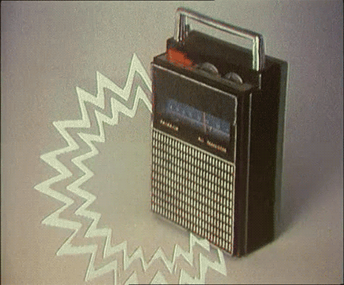

La radio es un medio de comunicación. Funciona através de ondas electromagneticas.
>Es masivo.
>Es portabe, barato, manejable y fácil. 
>Motiva a la imaginación.
II: Describes la radio, su evolución, su estructura e impacto.
2.1 La radio.

La radio es un medio de comunicación. Funciona através de ondas electromagneticas.
>Es masivo.>Es portabe, barato, manejable y fácil.
>Motiva a la imaginación.